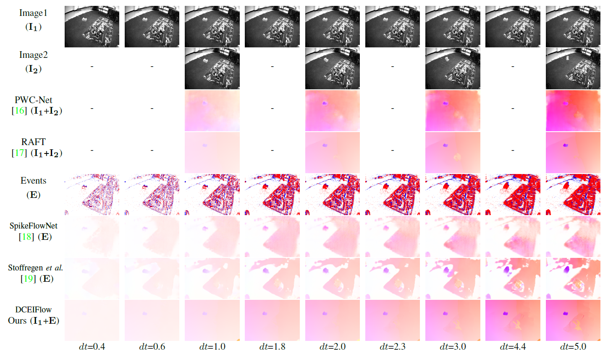
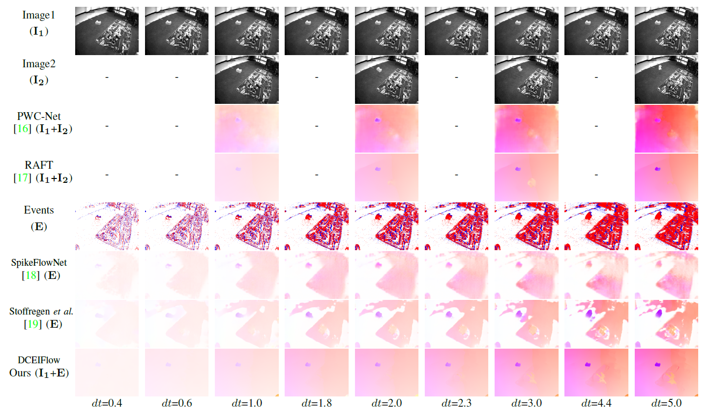

Abstract
Event cameras such as DAVIS can simultaneously output high temporal resolution events and low frame-rate intensity images, which own great potential in capturing scene motion, such as optical flow estimation. Most of the existing optical flow estimation methods are based on two consecutive image frames and can only estimate \emph{discrete flow} at a fixed time interval. Previous work has shown that \emph{continuous flow} estimation can be achieved by changing the quantities or time intervals of events. However, they are difficult to estimate reliable \emph{dense flow}, especially in the regions without any triggered events. In this paper, we propose a novel deep learning-based dense and continuous optical flow estimation framework from a single image with event streams, which facilitates the accurate perception of high-speed motion. Specifically, we first propose an event-image fusion and correlation module to effectively exploit the internal motion from two different modalities of data. Then we propose an iterative update network structure with bidirectional training for optical flow prediction. Therefore, our model can estimate reliable dense flow as two-frame-based methods, as well as estimate temporal continuous flow as event-based methods. Extensive experimental results on both synthetic and real captured datasets demonstrate that our model outperforms existing event-based state-of-the-art methods and our designed baselines for accurate dense and continuous optical flow estimation.
 
